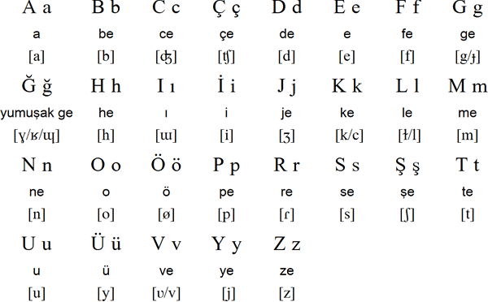
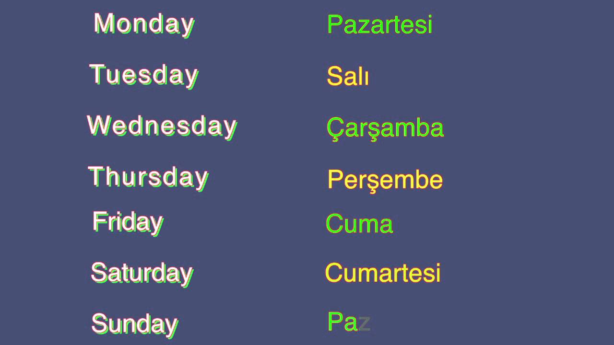

Lesson
Omer: Merhaba (Hello)
Nazli: Merhaba, benim adim Nazli. Sizin adiniz ne?(Hello, my name is Nazli. What is your name?
Omer: Benim adim Omer (My name is Omer)
Nazli: Memnum oldum (Nice to meet you)
Omer: Ben de memnum oldum. (Nice to meet you too)
Nazli: Nasilsiniz? (How are you?)
Omer: Tesekkur ederim, iyiyim. Siz nasilsiniz? (I am fine too, thank you. and how are you?)
Nazli: Tesekkur ederim, ben de iyiyim. (I am fine, thank you)
Alphabet
29 Letters
There are 29 letters in the Turkish alphabet of Turkey. "Q", "W" and "X" are not in Turkish alphabet
Days
Days of the week
Pazar=pah-ZAHR
Pazartesi=pah-ZAHR-teh-see
Sali=sah-LUH
Carsamba=char-shahm-BAH
Persembe=pehr-shehm-BEH
Cuma=joo-MAH
Cumartesi=joo-MAHR-teh-see